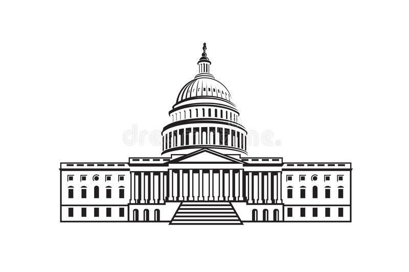

Yippee, through the funding of your political party, you managed to create a SUPER PAC. Unfortunately, you will have to compete with other PACs to gain influence and bankrupt them
also playable on mobile!
Basically
- Player 1 is Clinton, Player 2 is Bush, Player 3 is Obama, Player 4 is Trump
- Buy seats in the house of representatives
- Use pork-barrel spending to buy utilities
- Collect donations from your competitors when they land on your districts
- Find information about spaces by putting your mouse over them(if it only shows a cost, then that space is unowned)
- The fee for landing on a utility is the number on the dice times the multiplier(10 if both utilities are owned by the same person, 4 otherwise)
- You might be sent to federal prison for illegal campaign finance methods, but you get pardoned if you roll doubles
- If you land on chance or community chest, the SCOTUS moves you a random number of spaces
- Upgrade your representatives to raise more money
- You get $200 for landing on or passing go
- Franking privilege(free parking)/Amtrak(railroad) don't do anything unfortunately
- If you run out of money you lose
- Any bugs represent problems with the government
NOTE: WE DO NOT RECOMMEND THIS PROJECT IDEA TO ANY FUTURE STUDENTS
